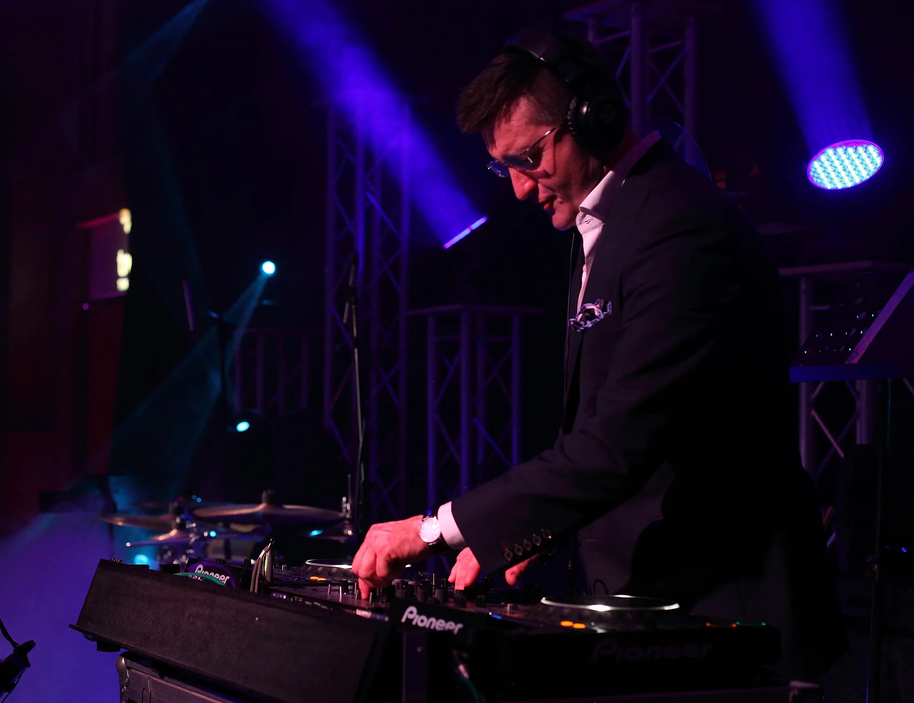

Repertuar Muzyczny
Nasi DJ-e, uwzględniając Państwa sugestie, przygotują wyjątkowy na tę okazję koktajl muzyczny z hitami lat 60, 70, 80, 90 jak i utworów współczesnych, nadając tej imprezie wyjątkowy i niepowtarzalny charakter. W naszej ekipie znajdziecie również DJ-ki.
